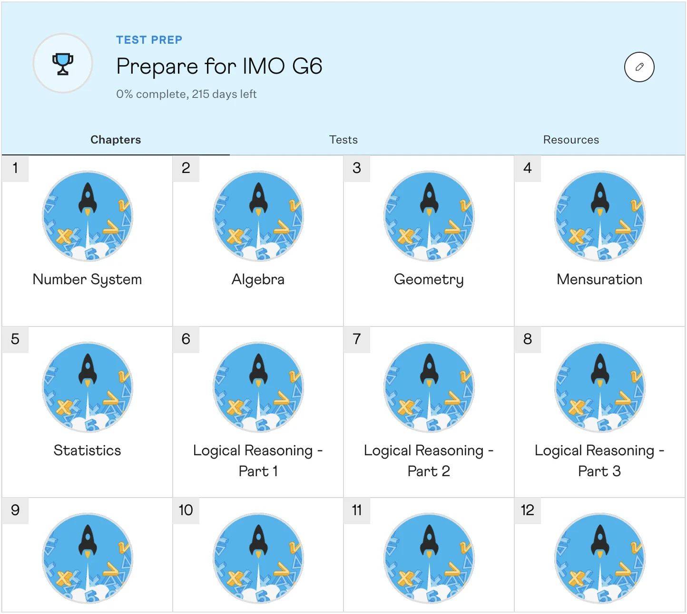
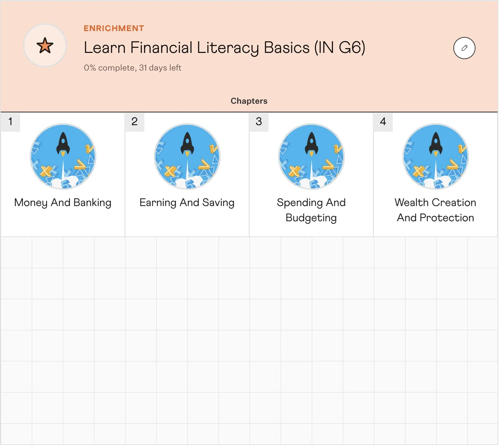
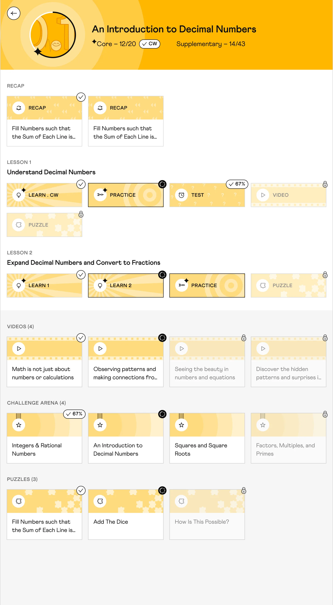

The problem
When a tutor wanted to build a custom learning plan, the only option was to layer full curriculum programs on top of each other — assign one, then another, sometimes a third. Every chapter came along, including ones that didn't apply. Within days, progress totals stopped meaning anything, homework lists became unreadable, and tracking broke.
For students, homework was hidden. To see what was due, they had to open a chapter, scroll past everything else, and find it at the bottom. Most never did. Tutors checking who'd done what had to dig into each chapter, item by item.
Role
I owned the design of the tutoring home end-to-end — one shared surface with role-aware controls for both tutors and students.
- Goal creation and homepage — goal creation flow, homework queue, and chapter UX for both tutor and student views
- Visual system — content type hierarchy (Lessons vs Resources), state visuals, and motion across cards and state changes
How it works
A tutor selects chapters from any curriculum and composes a custom goal in minutes. The student opens their home and sees exactly what's due — today, this week, overdue — without digging. The chapter page shows content in a clear hierarchy: mandatory lessons first, optional resources below, each with a visual state that holds up at a glance.
Goal creation → homework queue → chapter structure.
Open in Figma →Decisions
Three decisions shaped the redesign — how learning plans are built, how urgency reaches the student, and how a chapter page holds 13 content types without collapsing.
01Replace program stacking with goal-based composition
The fix was a goal-based model. A tutor picks a goal type — School Success, Test Prep, or Enrichment — then composes a plan from individual chapters across any of the 10 curricula. Nothing is assigned by default. The goal types gave tutors a frame for decisions that used to be implicit and gave students clearer context for what they were working toward.


02Surface time, not just status
Homework had no urgency signal — a card due tomorrow looked identical to one due next week. The fix was a countdown badge — "3d", "7d" — on every active card, so time remaining was readable at a glance. Six states covered the full lifecycle: locked, active with countdown, partially done (as a percentage), completed, overdue, and needs-attention. Each used a distinct shape and icon rather than color alone — cards already carried their own visual backgrounds, and color-only urgency would have collapsed against them.
Overdue was designed to break pattern — a solid red pill, the most visually heavy state on the card. Two empty states shipped alongside — No homework assigned and All homework done — keeping Goals and Recent Chapters visible so an empty queue didn't mean an empty home.
03A chapter page that holds 13 content types without breaking
The chapter page was the hardest surface. Thirteen content types — lessons, practice, videos, puzzles, and more — had to coexist on one screen, each with four states (locked, unlocked, in-progress, completed). Lessons (mandatory, count toward progress) had to read as clearly distinct from Resources (optional enrichment).
13 content types — each with its own visual identity.
We presented the first version to stakeholders. They approved it. My design manager and I weren't convinced — hierarchy felt collapsed, states didn't pop, everything lived at the same visual level. We sat together one night, started over, and shipped the new version the next day. The shift was treating Lessons and Resources as distinct categories with their own background field, not just different card styles. State visuals got iconography paired with color so each state read at a glance. The system scaled: new content types could slot in without redesigning the page.
Stakeholders approved the version we didn't ship. The one we rebuilt overnight is the one I remember most.

Impact
Active students
30K
moved onto the redesigned home across all regions and grades.
Tutors
3,353
Active tutors globally on the redesigned home — NAM, ISC, IME, APAC, EUK, EMEA.
New goal types
3
School Success, Test Prep, and Enrichment — replacing all-or-nothing program assignment.
Curricula covered
10
Tutors can compose goals across all 10 curricula — CBSE, ICSE, Common Core, and more.
Custom goals became the default. Cleaner plans meant cleaner homework lists — progress tracking meant something again instead of a count no one trusted. The behavior shift held.
Feedback from the internal tutor cohort came back clean after launch. The channel was thin and self-selected, so the silence is a signal, not a verdict. Milestones (exams, medals, competitions) and the 50+ overdue edge case were deferred to V2 — both needed real usage data before designing for them.
Lessons
One animation draws attention. Many animations create noise.
I designed a stroke animation to draw students' attention to the sheet they should focus on next — one glowing card standing out from the rest. The problem was that the animation was assigned to all core sheets and all work-in-progress sheets on the page. In practice, a student's page could have five or six of these running at once, all pulsing for attention at the same time. The page already made it clear what was locked, in-progress, or done — and students already knew the order sheets unlock in. The animation was adding noise on top of a system that was already working. We piloted it with our in-house teachers, got strong pushback, and pulled it immediately.
State transitions — animation in the chapter page.
There is almost always more room than you think
This was one of my first projects end-to-end, and when my design manager asked what I thought of the approved design, I defaulted to "we're out of time" — I couldn't articulate what felt wrong, so I didn't push back. He didn't accept that. We sat down that evening with no plan, just Figma open, iterating side by side and sharing ideas as they came. By 2am we had something we were both comfortable shipping — far better than what was approved, with no extra brief and no time formally blocked. Just two people deciding to figure it out. What I carried from that night: there is almost always more room to improve than you think, if you commit to using whatever time is left.
The pushback that derailed our scope became the next project
Cutting the puzzle sections looked like easy cleanup — until the experienced tutors pushed back hard. Those puzzles weren't filler, they said; they were how they reset a distracted kid mid-class. That one conversation became a project of its own — Feel Check, a check-in flow that helps kids settle before class begins. The lesson I carry: the user pushback that derails your current scope is often the start of your next one.